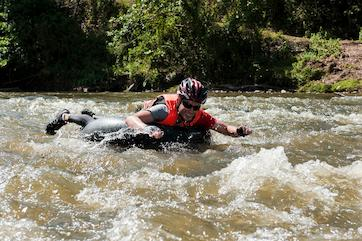
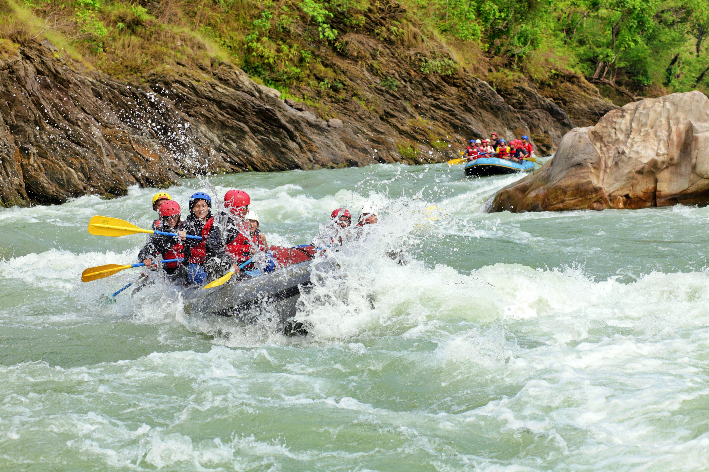

At Kavango Rapids, our mission is to share the power and beauty of Namibia's Kavango River through safe, guided adventures. We believe every rapid tells a story, and every guest should leave the water with a new one of their own.


At Kavango Rapids, our mission is to share the power and beauty of Namibia's Kavango River through safe, guided adventures. We believe every rapid tells a story, and every guest should leave the water with a new one of their own.
Kavango Rapids was founded by a small group of local guides who grew up swimming and fishing along the Kavango River. What began as informal weekend trips for friends grew into a full guiding company, built on deep knowledge of the river's moods and a commitment to showing visitors the same respect for the water that our founders learned as children. Today we run trips for first-timers and seasoned paddlers alike, always led by guides who call this river home.